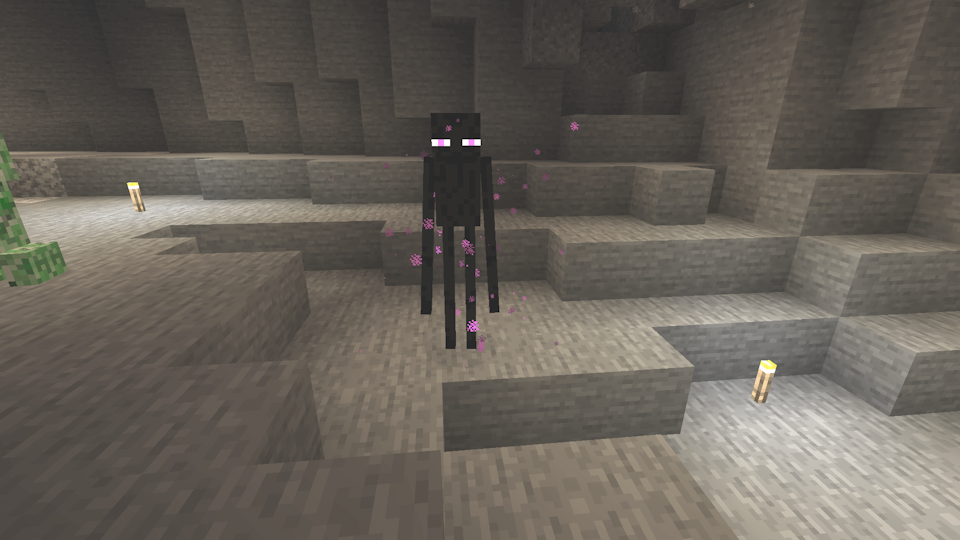

Mobs
Table of Contents
1 Hostile Mobs1.1 Zombie
1.2 Skeleton
1.3 Creeper
1.4 Spider
1.5 Slime
1.6 Enderman
1.7 Witch
1.8 Zombie Villager
1.9 Drowned
1.10 Silverfish
1.11 Cave Spider
1.12 Warden
1.13 Pillager
1.14 Stray
1.15 Endermite
2 Passive Mobs
2.1 Bat
2.2 Glow Squid
2.3 Axolotl
2.4 Tropical Fish
2.5 Chicken
2.6 Villager
2.7 Iron Golem
2.8 Snow Golem
2.9 Strider
3 Others
Hostile Mobs
Zombie
Zombies are one of the four most common hostile mobs, and the most basic. They slowly lumber after players, Villagers, and Iron Golems, attacking with their arms when they get close. Zombies can spawn holding armor, iron swords, and iron shovels, and some of them can pick up items dropped near them. On Hard difficulty, they can break down wooden doors.
When a Zombie is attacked, all Zombies in a somewhat wide radius immediately become aggravated and attack whatever hurt the original Zombie. On Hard difficulty, there is also a chance of another Zombie spawning up to 32 blocks away.
Zombies also have a 5% chance of spawning as babies. Baby Zombies are much faster than adult Zombies, and can fit through 1-block tall spaces. They are hard to hit because of their speed and small size.
Zombies have 20 health, the same as the player. As undead mobs, they are immune to Poison and Regeneration potions, healed by Harming potions, harmed by Healing potions, and weak to the Smite enchantment.
When killed, Zombies drop up to 2 Rotten Flesh, and they have a chance of also dropping an Iron Ingot, Carrot, or Potato (Baked Potato if killed while on fire). They also have a chance of dropping any armor or weapon they spawned with. Items that were picked up are always dropped.
Zombies spawn in darkness, everywhere in the Overworld that hostile mobs can spawn. Spawners are found in 50% of Monster Rooms.
Skeleton
Skeletons are another of the four most common hostile mobs. They spawn with bows, and shoot at players and Iron Golems. When attacking, they strafe back and forth to avoid incoming arrows, though they are clumsy and will walk off cliffs while strafing. Like Zombies, they can spawn with armor and pick up items, though they will only pick up weapons and armor. If a Skeleton misses its target and hits another hostile mob, that mob will retaliate against the Skeleton and fight to the death.
Skeletons have 20 health, the same as the player. As undead mobs, they are immune to Poison and Regeneration potions, healed by Harming potions, harmed by Healing potions, and weak to the Smite enchantment.
A shield is recommended when fighting Skeletons, as it can be used to block all incoming arrows.
When killed, Skeletons drop up to 2 Bones and up to 2 Arrows. They also have a chance of dropping any armor they spawned with, or their bow. Items that were picked up are always dropped.
Skeletons spawn in darkness, everywhere in the Overworld that hostile mobs can spawn. Spawners are found in 25% of Monster Rooms. Skeletons also spawn in the Nether, in the Soul Sand Valley and Nether Fortresses. In the Nether, they ignore light level when spawning.
Creeper
Creepers are the third of the four most common hostile mobs. They are unique in that they attack by exploding, killing themselves in the process. A Creeper explosion can break blocks, hurt or kill other mobs, and at point-blank range is the strongest attack of any mob. Creepers are only hostile to players, not other mobs such as Iron Golems, though they will retaliate if struck by a projectile.
The normal way of fighting Creepers without projectiles is to hit them and back away, as they cancel their explosion when their target is out of range. But there are also numerous ways of allowing them to explode while mitigating the effects of the explosion. Luring the Creeper into water will prevent it from breaking blocks. If there is clear space behind the Creeper, charging through it causes it to explode while doing negligible damage, since the player leaves its range before it can cancel the explosion. A shield can be used to block all the damage from the explosion. Placing a block on the floor between the player and the Creeper will also absorb most of the damage. Finally, using a Flint and Steel on a Creeper will cause it to explode, but will also prevent it from canceling its explosion, allowing the player to back away safely if quick enough.
Creepers have 20 health, the same as the player.
When killed, Creepers drop up to 2 Gunpowder. If killed by a Skeleton, they will additionally drop one of the 12 Music Discs by C418: "13", "cat", "blocks", "chirp", "far", "mall", "mellohi", "stal", "strad", "ward", "wait", and "11". Discs by other authors ("Pigstep", "Otherside", "5", and "Relic") can't be obtained by this method.
Creepers spawn in darkness, everywhere in the Overworld that hostile mobs can spawn. Unlike the other common Overworld hostile mobs, they don't have spawners anywhere in the world nor do they have a structure or biome in which they are more common, so the only way of building a Creeper-only farm is to build a farm that blocks all hostile mob spawns except for Creepers.
Spider
Spiders are the last of the four most common hostile mobs. They move more quickly than other mobs, and can climb walls. Spiders are hostile to players and Iron Golems, and attack by charging and pouncing. If they are in a lit area with a light level of 7 or higher and not already pursuing a player, they will not attack Players until they are attacked or the light is removed. Their eyes glow red in the dark, allowing them to be seen from a distance if they are facing the player.
Spiders have 16 health, less than other hostile mobs. They are weak to the Bane of Arthropods enchantment.
When killed, Spiders drop up to 2 String, and have a chance of dropping a Spider Eye.
Spiders spawn in darkness, everywhere in the Overworld that hostile mobs can spawn. Spawners are found in 25% of Monster Rooms. Spider spawners can also be found above ground in one of Woodland Mansions' hidden rooms.
Slime
Slimes are an uncommon Overworld mob that come in three sizes. Unlike most mobs, Slimes are unable to pathfind, instead hopping forward in a straight line and turning occasionally. This makes them very likely to jump off ledges.
Slimes are hostile to Players and Iron Golems, and attack by jumping toward their target. Touching a Slime is enough to be damaged by it, but the smallest size can't actually hurt anything.
Slimes are stronger the larger they are. Large slimes have 8 health, medium Slimes have 4 health, and small simes have 1 health and don't deal damage.
When killed, large and medium Slimes drop nothing and split into 2-4 of the next size down. The smallest size drops up to 2 slime balls when killed.
Although Slimes are part of the spawn list everywhere across the Overworld, they will only actually spawn below Y:40 in designated Slime chunks, or above Y:51 in Swamps and Mangrove Swamps. In Slime chunks they can spawn in any light level, allowing them to spawn in areas that no other mob can spawn. In Swamps, they spawn in areas with light level 7 or below, making it possible to prevent their spawning with light, and their spawn rate depends on the phase of the moon.
Enderman
Endermen are a three-block tall mob that can be found across all three dimensions. They are always hostile to Endermites, but against Players they only retaliate if they are attacked, or if their top half is looked at (in the latter case, they wait until they are no longer being stared at). Besides fighting with melee attacks, Enderman also teleport around and randomly pick up and place various blocks. Their eyes glow purple in the darkness.
Because Endermen are three blocks tall, the player can easily hide from them in a two-block tall space. Furthermore, Endermen are also damaged by water and teleport on contact with it, allowing the player to hide in plain sight by staying in a body of water. Endermen's weakness to water also applies to rain, so in the rain they will teleport constantly until they find shelter or die. Endermen have 40 health, twice that of the player.
When killed, Endermen drop up to 1 Ender Pearl. This is important, since Ender Pearls are needed to craft Eyes of Ender to reach the End and fight the Ender Dragon.
In the Overworld, Endermen spawn rarely in darkness wherever hostile mobs can spawn, although because of their height they need 3 blocks of headroom instead of 2 like most mobs. In the Nether, they spawn in the Nether Wastes, Soul Sand Valley, and Warped Forest, and are the only mob that spawns in the Warped Forest. In the End, they spawn in massive numbers everywhere.
Witch
Witches are an uncommon hostile mob in the Overworld resembling Villagers. They attack by throwing potions; they throw Potions of Weakness, Slowness, Harming, and Poison. They also drink potions. When their target is far away, they drink Potions of Speed. When their health is low, they drink Potions of Healing, which can make them annoying to kill. And when they are submerged or take fire damage, they drink Potions of Water Breathing or Fire Resistance respectively.
Witches have 26 health, a bit more than other mobs. The Harming potions they throw deal heavy damage and bypass armor and shields, and the Poison effect gradually lowers the player to half a heart, making even the slightest bit of damage fatal. Witches are also resistant to magic damage such as the player's potions. All these factors combined with their tendency to drink Healing potions make Witches the most dangerous of the seven mobs that spawn in darkness throughout the Overworld.
When killed, Witches drop up to 2 Redstone Dust, Glowstone Dust, Sugar, Gunpowder, Spider Eyes, Glass Bottles, and/or Sticks. Sticks are more common than the other drops. If killed while drinking a potion, they have a chance of dropping the potion.
Witches spawn in darkness, everywhere in the Overworld that hostile mobs can spawn.
Zombie Villager
Zombie Villagers are Villagers that have been infected with the Zombie disease. They behave exactly like Zombies, except they are a little taller. They can be cured of the infection by giving them a Golden Apple while they are under the Weakness effect.
Zombie Villagers make up 5% of all Zombie spawns, although in Java Edition they aren't spawned from spawner blocks or the zombie reinforcement mechanic. In Java Edition, they are more common in Old Growth Pine Taiga, making up 20% of Zombie spawns instead of 5%. One Zombie Villager is guaranteed to spawn in each Igloo basement, which also contains the items needed to cure it. More Zombie Villagers are also created when any kind of Zombie kills a Villager on Normal or Hard difficulty.
Drowned
Drowned are an aquatic Zombie variant. They attack like normal Zombies And are hostile to the same targets, but they won't leave the water voluntarily and prioritize getting back in the water over pursuing targets, so one can largely avoid them by staying out of the water, unless they have a Trident. Drowned can spawn holding a Trident, Fishing Rod, or Nautilus Shell, unless they were converted from normal Zombies, in which case they keep whatever gear they had as a Zombie. Drowned holding a Trident will throw an endless amount of Tridents that can't be picked up. This is among the strongest non-explosive mob attacks in the game.
Unlike most Zombie variants, Drowned have different drops than normal Zombies. When killed, Drowned drop up to 2 Rotten Flesh, and they have a chance of also dropping a Copper Ingot. They also have a chance of dropping any armor or weapon they spawned with or picked up. Drowned holding Nautilus Shells will always drop the shell. In Bedrock Edition, they always have a chance to drop a Trident whether or not they were holding one, making it possible to obtain Tridents from converting Zombies in this version.
Drowned spawn underwater in darkness, in Dripstone Caves, Rivers, and Oceans. They spawn more frequently in Rivers compared to the other locations. Drowned also spawn when Zombies drown in water; Drowned spawned in this way will never spawn holding a Trident, Fishing Rod, or Nautilus Shell.
Silverfish
Silverfish are small, gray, hairy bugs that infest Stone. Usually, they are found in Infested Stone or Deepslate blocks, which take half the time to mine as their uninfested counterparts, and spawn when the blocks are broken. They aren't very strong individually, but when a player attacks them or they take poison damage, they call nearby Silverfish to break out of their blocks. As a result, the player can easily be swarmed, especially in Strongholds.
Silverfish have 8 health, half that of Spiders, and are weak to Bane of Arthropods.
When killed, Silverfish drop nothing but experience.
Silverfish spawn in two ways: from Infested Stone, and from spawners in Strongholds. Infested Stone generates like an ore beneath Mountains and Windswept Hills, and there are also Infested blocks in Igloo basements, Strongholds, and Woodland Mansions.
Cave Spider
Cave Spiders are a Spider variant found in Abandoned Mineshafts. Compared to normal Spiders, they are much smaller, allowing them to fit through 1-block wide holes, and their bites are venomous and give the player the Poison effect if they deal any damage.
Cave Spiders can be infuriating to encounter, since their speed and small size makes them hard to hit, on top of the poison effect often lowering the player to half a heart.
Cave Spiders spawn only from Cave Spider spawners, which are found in Abandoned Mineshafts. The spawners are surrounded by cobwebs, which impede movement through them for all players and mobs except Spiders and Cave Spiders.
Warden
The Warden is the most powerful mob in the game. It is blind, and relies on vibrations (the same system Sculk Sensors use) and smell to find its way around. It can thus be avoided by keeping one's distance while making few to no vibrations. After it's bored for a minute, it despawns, unless in water or lava.
Engaging the Warden is a bad idea. It has as much health as the Ender Dragon and Wither (on Java Edition) combined, and its melee attack is the single strongest non-explosive attack in the game, having the ability to one-hit kill the player provided they are on Hard difficulty without armor. Even tricks that commonly work against mobs with melee attacks such as pillaring up or retreating behind a wall will fail, since the Warden attacks targets it can't reach with a sonic boom attack that bypasses armor and passes through obstacles.
When killed, the Warden drops a single Sculk Catalyst. The Warden is very hard to kill, though, and Sculk Catalysts aren't that hard to come by, so killing the Warden is not really worth the danger.
The Warden spawns only in the Deep Dark and Ancient City, when a natural Sculk Shrieker is activated four times within a fairly long time span. All other areas are usually safe from it, although if it wanders out of the Deep Dark it will likely get distracted by fighting other mobs and thus never despawn. Only players can activate Sculk Shriekers though, so if the player never visits the Deep Dark they will never encounter the Warden.
Pillager
Pillagers are the most common Illager. They attack Players, Villagers, and Iron Golems with crossbows.
Pillagers have 24 health, more than the player but not as much as Witches. They can be fought using similar tactics to Skeletons, although there are differences. Pillagers don't strafe, but instead stand in place while loading and shooting. They aren't undead mobs, and so Smite is ineffective. Finally, if they have the Piercing enchantment then shields are useless.
When killed, Pillagers usually drop nothing but experience, but they do have a chance of dropping their crossbow.
Pillagers have three ways of spawning, all of which normally place them on the surface. The one way Pillagers can spawn underground is when they spawn near a Pillager Outpost; the Pillager Outpost spawns Pillagers in a very large range around the structure, which can encompass nearby caves.
Stray
Strays are a Skeleton variant found in cold climates. Compared to normal Skeletons, Strays shoot Arrows of Slowness instead of normal Arrows, and can stand in Powder Snow without freezing.
Besides the normal Skeleton drops, Strays also drop up to 1 Arrow of Slowness when killed by a player. It is thus worth running the output of a Skeleton spawner through Powder Snow to convert the Skeletons into Strays.
Strays spawn on the surface in Snowy Plains and Ice Spikes (and more biomes in Bedrock Edition). Underground, they can be encountered by freezing Skeletons in Powder Snow.
Endermite
Endermites are small, purple bugs. They have the same size, stats, and sounds as Silverfish, and are weak to Bane of Arthropods, but unlike Silverfish they don't infest stone. Mostly, they're just a nuisance that can't cause any real harm, but Endermen go crazy when they see one, making Endermites useful for building Enderman farms.
When killed, Endermites drop nothing but experience.
When an Ender Pearl lands and teleports a player, there is a 5% chance that an Endermite spawns. This is the only way that Endermites spawn.
Passive Mobs
Bat
Bats are small passive mobs that spawn in darkness below Y:63. They don't do much other than screech and fly around, and can't be interacted with in any way other than attacking them. They drop nothing when killed.
Bats have their own mob cap, and despawn if the player goes too far away.
Glow Squid
Glow Squid are a glowing version of Squid that spawn in water below Y:30. In Java Edition the water must additionally be darkened; in Bedrock Edition cave spawns and surface spawns are separated, and Glow Squid are cave-only spawns. Like normal Squid, Glow Squid have a tendency to beach themselves and then die from being out of water. When they die, Glow Squid drop Glow Ink Sacs, which can be used to make sign text and Item Frames glow in the dark.
Glow Squid have their own mob cap, but unlike Bats and Axolotls they do not despawn.
Axolotl
Axolotls, "the cutest predator", are a friendly aquatic mob. They spawn in bodies of water in Lush Caves that have clay at the bottom, and come in four colors naturally. They save their color when bucketed, but the bucket item always displays a pink axolotl. Axolotls attack most other aquatic mobs, including Drowned (though they will only kill one passive mob every two minutes), and can be bred with Bucket of Tropical Fish. When bred, there is a 1 in 1200 chance of the offspring being a rare blue axolotl, which don't spawn naturally. Axolotls drop nothing when killed.
Axolotls have their own mob cap, and despawn if the player goes too far away. If they've been bucketed and released, they will no longer despawn.
Tropical Fish
Tropical Fish are one of the four types of fish, and the only one to spawn underground. Normally, fish need 3-block deep water above Y:50 in an appropriate biome to spawn in Java Edition and to be on the surface in Bedrock Edition, but Tropical Fish in Lush Caves are an exception, and spawn at all elevations.
Tropical Fish have 2700 color/pattern/size variants, though the 22 types with unique names are more common than any of the others, and spawn in schools of several fish of the same type. They save their appearance when bucketed, but the bucket item always displays a Clownfish. When killed, Tropical Fish are converted to a dead Tropical Fish item, which also always looks like a Clownfish, and have a chance of also dropping 1-2 Bones (in Bedrock Edition) or 1 Bone Meal (in Java Edition). Tropical Fish can't be cooked, and are a terrible food source.
Tropical Fish are part of the fish mob cap, along with the three other fish types that only spawn above ground, and they despawn if the player goes too far away. If they've been bucketed and released, they will no longer despawn.
Chicken
Exclusively to Java Edition, baby Zombies and variants thereof have a 5% chance of spawning riding a Chicken. These Chickens are unlike normal Chickens in that they don't lay eggs, and can despawn. Killing the Baby Zombie is very likely to also kill the Chicken (unless Potions of Healing are used), but if two Chickens have their Baby Zombies removed, they can be bred with Seeds to get more Chickens.
When killed, Chickens drop Raw Chicken (Cooked Chicken if on fire) and up to 2 Feathers.
Chickens are part of the main passive mob cap. Normal Chickens don't despawn, but the ones spawned by Baby Zombies do.
Villager
See also: Walkthrough/Making a Village
Villagers are NPCs who trade items for Emeralds. Even when underground, they still follow the typical schedule of sleeping at night, working during the day, and meeting at the village center in the evening. All Villagers' workstations plus beds are craftable, so once the player has cured 2 Villagers (enough for them to breed) it is possible to build a fully functional village underground.
Iron Golem
Iron Golems are a powerful defensive mob that attacks all hostile mobs (except Creepers). They spawn in Villages, including player-built ones, and can also be built by placing a carved pumpkin on top of a T-shape made of Blocks of Iron.
Snow Golem
Snow Golems are a weak defensive mob that throws snowballs at all hostile mobs, including Creepers. Snowballs deal no damage, but do anger the mobs, and since Snow Golems have only 4 health, infrastructure to keep the mobs away from the Golem.
Snow Golems take heat damage in hot biomes such as Deserts, as well as if they are ever in water. Fire Resistance potions can protect them from hot biomes, but not from water.
Snow Golems leave a trail of snow below them. Trapping them and breaking the snow below them makes a very simple snow farm.
Strider
Striders are a red passive mob that walks atop the lava lakes in the Nether. They can be brought back to the Overworld safely and used to traverse lava there, though they die in water.
Striders can be ridden with a Saddle, controlled using a Warped Fungus on a Stick, and bred using Warped Fungi (which are a Nether resource). When killed, Striders drop 2-5 String, which is more than Spiders.
Others
Not listed here are the various hostile mobs inhabiting the Nether. There are as many different types of hostile mob in the nether as in the underground.
Bee Nests with Bees already in them can occur on Oak, Birch, or Mangrove trees when grown near flowers. This means that if you were to obtain an Oak Sapling, Birch Sapling, or Mangrove Propagule it would then be possible to obtain Bees. It should be noted that Bees don't like being underground and will fly upward to the surface if possible, so caging them up is recommended.
Depending on the version, some surface and ocean mobs may be able to spawn in caves. For example, in Java Edition, aquatic mobs don't need to be above ground to spawn, only above Y:50, so it is theoretically possible for them to spawn in flooded caves close to or below Rivers and Oceans.
It may be possible for Cats, Wandering Traders, and Trader Llamas to spawn underground in a player-built Village, but I haven't been able to test this. If wandering traders do spawn, that makes it possible to access numerous materials from the surface, including all wood types.
Regardless, it is possible, though unlikely in the case of passive mobs, that mobs from the surface could wander or fall into chasms that reach the surface, making those mobs and their drops accessible.